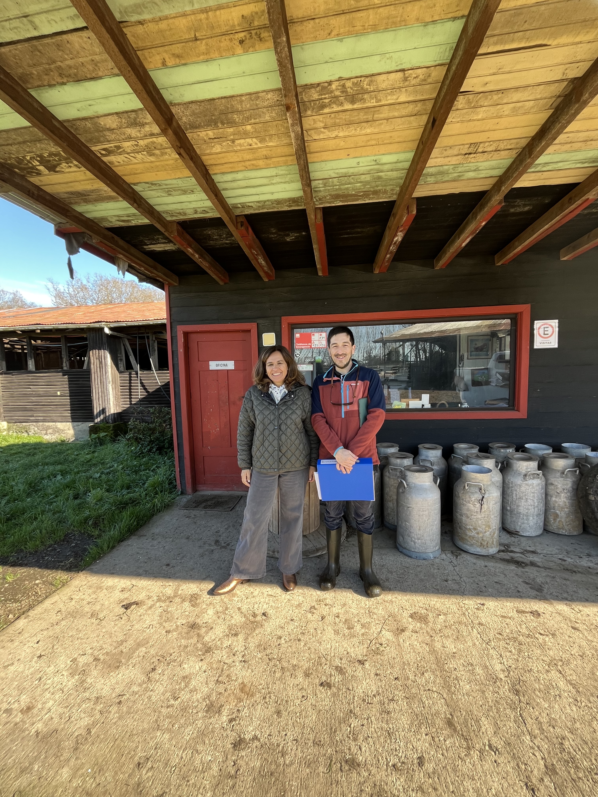

Los Datos no deben abrumar.
Deben ayudar. Y resolver un problema.
La solución no son más datos . Sino Integrar más Datos.
Simplificamos lo complejo . Para ahorrar valioso tiempo.
Soluciones simples . Información clave en sus manos.
¿Excesivo tiempo en planillas o reportes a mano?
¿Los datos llegan atrasados o no llegan a los manejos?
¿Muchos datos pero no tienes mucha información?
¿Hay que digitalizar para no depender de una persona?
SERVICIOS MODERNOS CON LOS PIES EN TERRENO
No es que no estén los datos, o que no sepan cómo hacerlo. Es el tiempo y el margen de error que toma hacerlo bien
Monitoreo de Precisión Integrado
Para lecherías que buscan pragmatismo y eficiencia. Ahorre tiempo, reduzca errores y facilite el éxito de los manejos.
- ⚡ Menos esfuerzo: más decisiones más acciones precisas
- ⚡ Seguimiento: RCS, Productivo, Fertilidad y Ranking
- ⚡ Análisis históricos y de Tendencias Continuo
Automatización y Digitalización
Para PYMES de servicios, cooperativas o grupos con desafíos de integración de datos específicos o complejos.
- ⚡ Soluciones personalizadas y pertinentes
- ⚡ Gane tiempo, reduciendo jornadas y tiempos de entrega
- ⚡ Implementación de soluciones digitales o Apps
Análisis genómicos o genealogía
Esquemas de selección o asignación dirigida de hembras de forma temprana en base a datos o biotecnología.
- ⚡ Plan y análisis PCR Leche A2 o Beta-caseín
- ⚡ Plan y análisis PCR Quesos o Kappa-caseína
- ⚡ Selección de madres, vqs y reproductores
Certificación de Sustentabilidad
Para empresas que quieren supervisar el uso de recursos y/o prepararse para futuras normativas y exigencias.
- ⚡ Diagnóstico y plan de acción
- ⚡ Gestión de registros claves
- ⚡ Implementación de acciones

Marcos Andrés Fernández
Ingeniero Agrícola & Msc. en Data Science
Dipl. en Cambio Climático Silvoagropecuario
Auditor Certificación Sustentabilidad (Consorcio Lechero)
Principio rector:
Unir el Campo con la Tecnología
Mi pasión fue traspasada por mis abuelos. Como Ingeniero Agrícola, viví en terreno los desafíos de la gestión diaria. Mi curiosidad por la tecnología me llevó a especializarme en Data Science. Hoy, mis esfuerzos están en unir estos dos mundos, la tradición y la innovación, para ofrecer soluciones tecnológicas basadas en datos que sean realmente prácticas y útiles, fundamentadas en la ciencia y enfocadas en la sostenibilidad.
"Acercar la tecnología para ser aplicable al campo. Usar los datos e integrarlos para tomar decisiones rápidas, inteligentes y precisas. Mejorar la eficiencia al reducir los esfuerzos diarios para producir Leche."
Nuestra Empresa
Conoce nuestros principios y objetivos.
Misión
Digitalizar y simplificar la gestión lechera mediante tecnología y analítica en la nube que automatiza, integra y personaliza datos dispersos para aumentar precisión y eficiencia al tomar decisiones pertinentes y sostenibles, elevando la competitividad de empresas lecheras y sus redes técnicas.
Visión
Ser la plataforma de referencia en monitoreo lechero de precisión en Chile, interoperando con dispositivos, integrando IoT y servicios del ecosistema de datos, escalando con aliados regionales para confluir hacía una agro ganadería más eficiente, transparente y sustentable.
Galería de Proyectos
Conozca algunos de los proyectos adjudicados y en marcha de la empresa.

Monitoreo Inteligente de Precisión
Análisis y Reportes de seguimiento continuo

Certificación de Sustentabilidad
Diagnóstico y plan de adaptación de manejos prediales

Automatización procesos digitales
Generación automatizada de informes

Análisis Genómico o Pedigree
Selección por biotecnología o datos históricos

Digitalización de Procesos
Optimización y registros en aréas de trabajo

Integración de herramientas digitales
Uso de softwares y dispositivos de gestión lechera

Preparación del personal en procesos
Compromiso e integración para flujos de trabajo efectivos

Producción de Leche Sostenible
Sistemas lecheros basados en la pradera
Resultados Tangibles
Así es como algunas propuestas han impactado a empresas como la suya.
Cliente: Empresa de Servicios, Región de Los Lagos
Desafío: Procesos manuales, lentos y propensos a errores para generar reportes a sus clientes.
La solución fue desarrollar e implementar un prototipo de una App para automatizar el análisis con reportes personalizables, transformando su flujo de trabajo.
40%
Reducción de horas/semana en trabajo administrativo.
>95%
Disminución de errores de digitación.
24h
Entrega más rápida y pertinente de reportes a clientes finales.
"Ahora entendemos nuestros datos, hemos mejorado la satisfacción de los clientes y tenemos más tiempo para otras tareas."
- Encargado Operaciones
Recursos y Conocimiento
Mi objetivo es compartir conocimiento práctico. Revise algunos artículos o descargue mi checklist gratuito.
Tecnología y Analítica Lechera en Chile
Nota del Consorcio Lechero: Resumen de cómo la analítica llega a la lechería.
Leer más →5 monitoreos clave en su Lechería
Vaya más allá de los litros. Descubra como beneficiarse del uso de datos.
Leer más →SIPEC: Simplifique su cuadratura y reduzca tiempo
Vea cómo la tecnología y la digitalización puede transformar el cumplimiento.
Leer más →¿Muchos Datos, Poca Información?
Una guía práctica para transformar sus datos acumulados en decisiones trascendentes.
Leer más →Checklist para un Monitoreo Lechero de Precisión
Una herramienta práctica para evaluar y mejorar sus procesos de gestión de rebaño a tiempo.
El archivo se abrirá en una nueva pestaña tras ingresar su correo.
Conversemos sin compromiso
Las preguntas no tienen costo. Primero hay que hablar de lo que se puede y no se puede hacer. La idea es aportar con métricas y generar ROI.

Disponible para trabajo presencial y remoto
Información de Contacto
Email:
Teléfono/WhatsApp:
+56 9 3029390
Redes sociales:
LinkedIn
Zona trabajo y ubicación:
Zona Sur. Ubicado en Valdivia, Los Ríos.
Presentación Tesis Msc:
Detección de mastitis por sensores
Ver Presentación